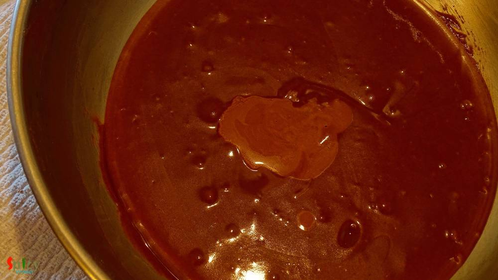

Simple and Easy Recipes
Chocolate Cake Squares (Vegan)
© 2016 Spicy World, Published on: Mar 1, 2016
I wanted to make a vegan chocolate cake but ended up with these fluffy squares. This type of incident happens a lot with me. Actually I made the batter in less quantity with comparison of my baking tray. So, after successful baking, length of the cake was thin. The whole round was not photogenic, but don't you think these squares are too cute ?? Well, sometimes it's better to give some last moment twists in your regular recipes. This cake has no egg, no butter and no milk. Try this in your kitchen and enjoy some guilt free chocolate cake with your family.
")
Ingredients
- Half cup of all purpose flour.
- 1/4th cup of unsweetened cocoa powder.
- 1/4th cup + 2 Tablespoons of sugar.
- 1/4th cup of vegetable oil.
- Half cup of chilled tap water.
- 3/4th Teaspoon of baking soda.
- 1 Teaspoon of vinegar.
- Pinch of salt.
- 2 Teaspoons of vanilla essence.
")
")
Steps
Preheat your oven in 350℉ for 10 minutes.
Take a mixing bowl and place a sieve on it.
Then add flour, cocoa powder, salt, sugar and baking soda one by one.
Sieve them twice or thrice properly.
Then make a hole in the center and add oil, water, vanilla essence.
Start mixing everything with a spatula.
After mixing for 3 minutes add vinegar.
Again mix for 2 - 3 minutes.

Now pour the batter into a greased pan.
Tap the pan twice on a table and place it into the oven.

Bake it for 30 minutes or so in 350℉.
After that remove the cake from the oven and let it cool down completely.
Then cut the whole cake into medium size squares and give a bite.
Your chocolate cake squares are ready ..
Enjoy them with any types of berries and ice cream ...
 (Final)")